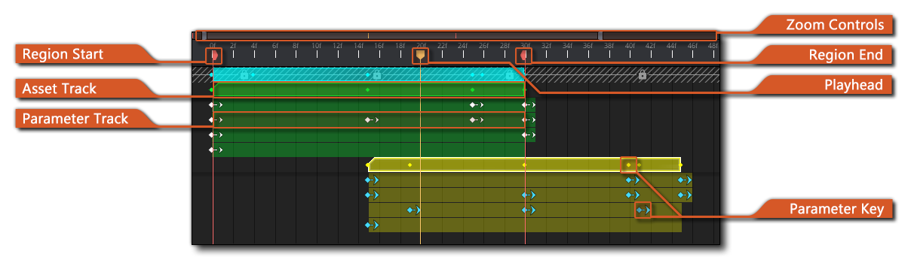
The Dope Sheet is where the data from the different tracks added to the sequence is displayed over time, giving you not just an overview of each track, but also a means to edit the position of them as well as the timings for changes in parameters, etc...
When you add a new asset to a sequence, a track will be created
in the Track Panel and a
track Key will be added to the dope sheet at the current
playhead position. This key will reflect the play length of the
asset in frames:
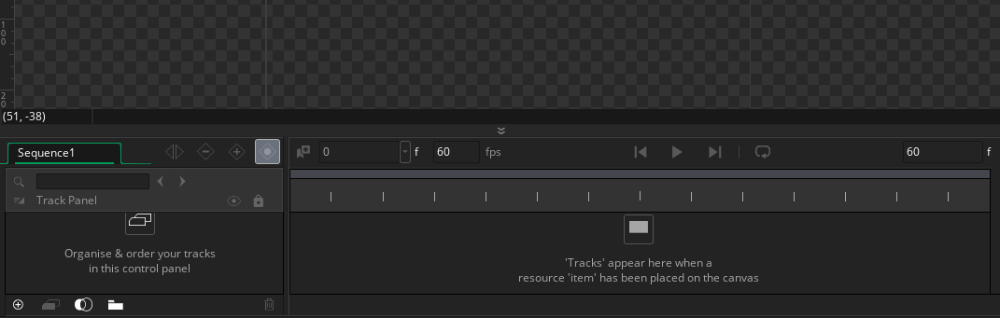
The asset key itself can then be edited by moving the mouse to
either the start or the end of the key frame and when the cursor
changes clicking  and dragging. This will either move
the start of the key or the end of the key, depending on which you
have selected, but both will affect the length of the key. Note
that you can also change an asset key position by simply clicking
anywhere on it and dragging left or right:
and dragging. This will either move
the start of the key or the end of the key, depending on which you
have selected, but both will affect the length of the key. Note
that you can also change an asset key position by simply clicking
anywhere on it and dragging left or right:
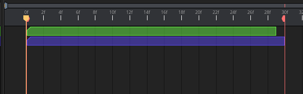
Other than asset keys, the dope sheet will also show parameter
keys. Parameter keys are initially "points" in time where you
signal a change to a property for the asset they are related to,
and the sequence will use the value for that point to change the
asset. How this is done will depend on whether you have set the
keys to interpolate or not in the Track Panel. Parameter
keys, like track keys, can be moved by clicking  and
dragging them along the timeline to a new position, and you can
also extend the key to more than a single frame using the
and
dragging them along the timeline to a new position, and you can
also extend the key to more than a single frame using the
 key at the same time as dragging
(the cursor will change to show this). This means that you can hold
key values over time before continuing with any interpolation to
the next key:
key at the same time as dragging
(the cursor will change to show this). This means that you can hold
key values over time before continuing with any interpolation to
the next key:
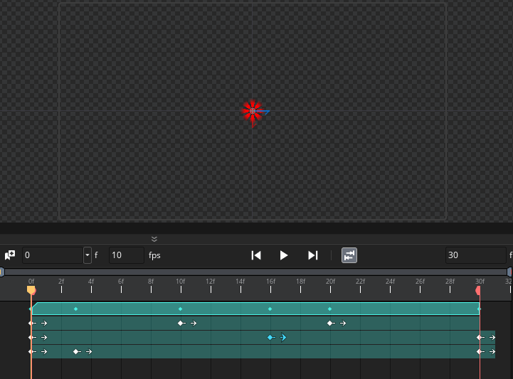
When working with the dope sheet note that the usual keyboard
shortcuts can be used, ie:  /
/  and the
left mouse button
and the
left mouse button  to select one or more keys in any
order, and to cut, copy and paste tracks you can use the
to select one or more keys in any
order, and to cut, copy and paste tracks you can use the
 /
/  + "X",
+ "X",
 /
/  + "C"
and
+ "C"
and  /
/  + "V"
key combinations. There are also different options for keys
available from the right mouse button
+ "V"
key combinations. There are also different options for keys
available from the right mouse button  menu,
which are detailed further down this page. Note that when pasting
keys into the dope sheet using these commands, the keys will be
pasted at the current position of the playhead.
menu,
which are detailed further down this page. Note that when pasting
keys into the dope sheet using these commands, the keys will be
pasted at the current position of the playhead.
That's the basics of using the dope sheet, but below we go into a bit more detail on what each of the different sections are for and how to use them:
These markers are the clip region start and end points. These can be used to set a specific section of the sequence to be shown in the room when the game is run, and will also be used as the loop points when previewing the sequence in the editor. These points cannot be greater or less than the total sequence length as set in the Sequence Editor Sequence Controls. To change the position of a clip region marker, simply click
and drag them to the desired frame.
This bar is used to show the current zoom of the dope sheet and it can also be used to change this zoom level. You can click
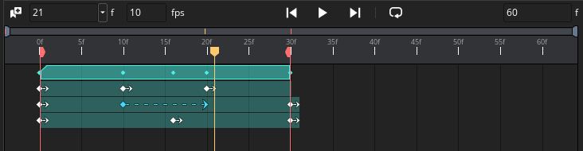
Note too that you can zoom the dope sheet in or out using the/
key and the mouse wheel
.
Asset tracks are represented on the dope sheet as "keys", which are coloured bars representing the position of the asset and the length of time it's active in the sequence. As mentioned above these can be moved around and lengthened and shortened as required. Note that an asset track key that is longer than the asset itself in duration - for example a sound might last 5 frames and you stretch its key to 15 frames - will be repeated for the entire duration of its key. Asset tracks and keys can be copied and pasted using the standard keyboard shortcuts or further modified using the right mouse button
menu options (explained further down this page).
If you delete an asset track key, this does not delete the track itself, nor does it delete any track parameters that have been added, it simply deletes the asset key from the dope sheet. If there are no further keys for this track, you can re-add them by dragging an asset from the Asset Browser into the dope sheet and it will be added as a new key, but note that you cannot add an asset that is distinct to the original asset (ie: if you delete a a key for a sprite, you cannot then add a sound asset into that key position).
Parameter tracks are represented on the dope sheet as coloured bars underneath the main asset track they belong to. The bars of colour themselves cannot be edited and are purely a visual representation of the track that the parameter keys are being applied to.
The playhead is the position in time at which the timeline is currently being previewed. This position is used when dropping assets into the Sequence Canvas to set the position where they have been added as well as a number of things, like adding parameters, or splitting keys. When you press "play" on the sequence editor canvas, the playhead will move through the sequence, and you can also click
Parameter keys are the "points" shown on a parameter track wherever a change in that parameter has occurred. These points can be moved as required and expanded so that they last more than one frame (as explained further up this page), and you can edit their value either from the Track Panel, or by changing the asset on the canvas (if it is a scale, position or rotation parameter). Note that all parameter track keys will also be reflected as a point on the key track that the parameter belongs to, but these points cannot be edited and are there as an informational aid when you have collapsed the different parameter tracks in the track editor.
Animation Curves
An important feature of the dope sheet is the ability to assign Animation Curves to parameter tracks within the sequence. When doing this, it is very important that you create your Animation Curve assets with the correct number of channels (curves) for the parameter track you want to target. This means that you will need:
- 4 channels for colour (Channels should be in ARGB order, and the range for each should be 0 to 255)
- 2 channels for position, scale and origin
- 1 channel for rotation, image index and image speed
- 1 channel for pitch and volume (curve values should be between 0 and 1)
There are two types of animation curves that can be used in your sequences:
- Embedded Curve - An embedded animation curve is a unique
set of curve data assigned to a specific track in the track panel.
An embedded curve can be edited like any other animation curve, but
it will not appear in the asset browser, as it is not a
stand-alone asset but instead linked only to the track it is
applied to.
- Asset Curve - An asset animation curve is one which has been created in the asset browser. These types of curves can be used on multiple different tracks and any changes to the animation curve asset will be propagated across all tracks that use it.
To add an animation curve asset to a track, you must first give
the track the required parameter track, for example, a position or
a rotation parameter track. Once that has been added you can use
the right mouse button  menu option Set To External Anim
Curve to open the Asset Explorer and select the required curve
from the ones presented to you. Note that only those curve assets
with the appropriate number of channels for the parameter track
being used will be shown.
menu option Set To External Anim
Curve to open the Asset Explorer and select the required curve
from the ones presented to you. Note that only those curve assets
with the appropriate number of channels for the parameter track
being used will be shown.
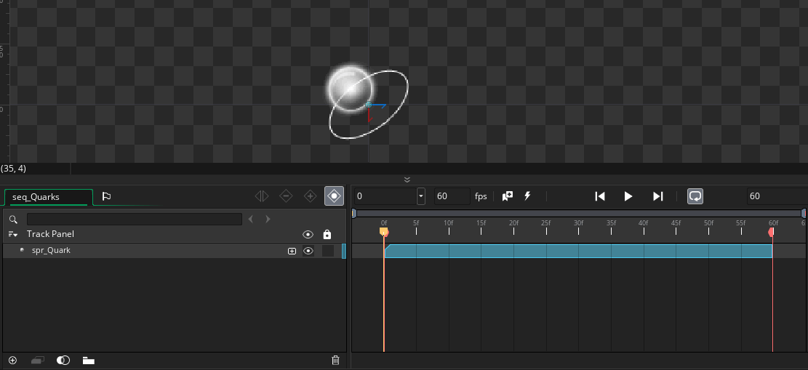
Once you have added an animation curve to a parameter track, it can
then be edited by simply double clicking  on it,
which will open the Animation
Curve Editor for the curve. You can also convert an animation
curve into an embedded curve using the right mouse button
on it,
which will open the Animation
Curve Editor for the curve. You can also convert an animation
curve into an embedded curve using the right mouse button
 menu option Convert To Embedded
Anim Curve. This will disassociate the curve from the asset
used, and link it only to the assigned asset track. You can
still edit the curve by double clicking
menu option Convert To Embedded
Anim Curve. This will disassociate the curve from the asset
used, and link it only to the assigned asset track. You can
still edit the curve by double clicking  on it,
but any edits will only be assigned to the curve on the track and
nowhere else.
on it,
but any edits will only be assigned to the curve on the track and
nowhere else.
Conversely, you can convert an embedded animation curve into an
animation curve asset using the right mouse button  menu
option Export Embedded Animation Curve. This will convert
the embedded curve into a new asset which can then be edited as
normal as well as applied to other parameter tracks if
required.
menu
option Export Embedded Animation Curve. This will convert
the embedded curve into a new asset which can then be edited as
normal as well as applied to other parameter tracks if
required.
Animation curves can also be converted into keyframes. This
option is again available from the right mouse button  menu,
Convert To Keys:
menu,
Convert To Keys:
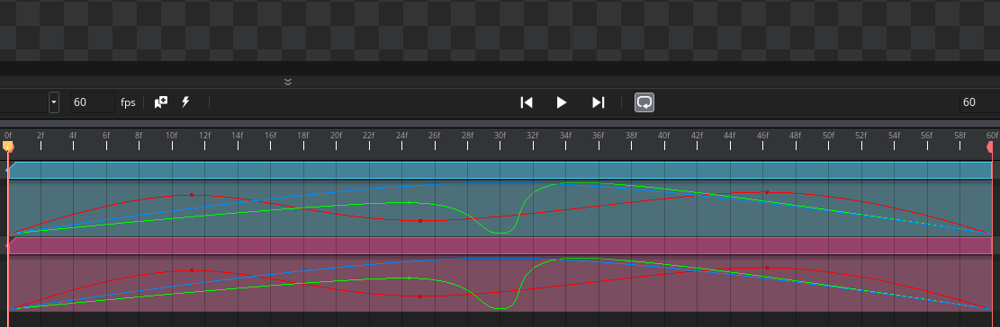
It is important to note, however. that there are a couple of
caveats associated with doing this:
- Keyframes cannot be "between" frames, and so some curve values
will need to be rounded to the nearest frame, which in turn will
change the way the paramter track behaves.
- If the animation curve uses catmull-rom interpolation, this will be lost and the interpolation between keyframes will be set to linear interpolation.
You can also convert keyframes into an embedded animation curve
from the right mouse button  menu using the option Convert To
Embedded Anim Curve:
menu using the option Convert To
Embedded Anim Curve:
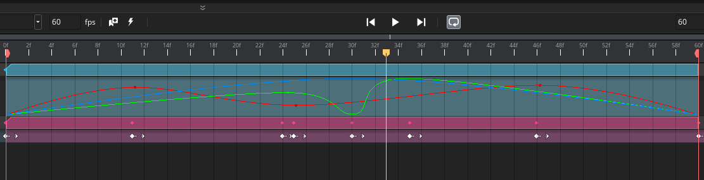
RMB Menu
Clicking the right mouse button  within
the dope sheet on an asset track will bring up the following
menu options (note some options may not be visible depending on
whether the part of the track clicked has a key or not):
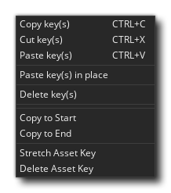
within
the dope sheet on an asset track will bring up the following
menu options (note some options may not be visible depending on
whether the part of the track clicked has a key or not):
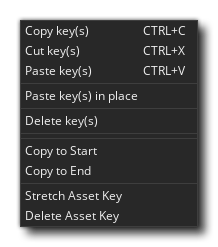
- Cut, Copy, and Paste key(s): These options
permit you to cut/copy/paste asset. Note that any keys pasted into
the dope sheet using these options will be pasted at the position
of the playhead.
- Paste Key(s) In Place: When you use this option, the
copied or cut key(s) will be pasted at the position where the right
mouse button was clicked, and not at the playhead
position.
- Delete Key(s): Selecting this will be delete the
currently selected key or keys.
- Copy To Start: This option will copy the selected key(s)
to the very start of the sequence (not the start of the clip
region).
- Copy To End: This option will copy the selected key(s)
to the very end of the sequence (not the end of the clip
region).
- Stretch Asset Key: When you select this, the asset key
selected will be stretched to the end of the sequence (not
the end of the clip region).
- Delete Asset Key: When you use this, the asset key
selected will be deleted and you can then add a new asset to the
track by dragging it from the asset browser onto the dope sheet
track that was deleted. This will create a new asset key which can
then be edited, while maintaining any parameter tracks associated
with the asset.
Clicking the right mouse button  within
the dope sheet on a parameter track will bring up the
following menu options (note some options may not be visible
depending on whether the part of the track clicked has a key frame
or not): 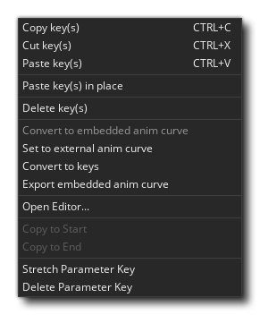
within
the dope sheet on a parameter track will bring up the
following menu options (note some options may not be visible
depending on whether the part of the track clicked has a key frame
or not): 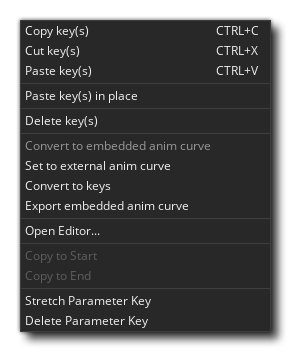
- Cut, Copy, and Paste key(s): These options
permit you to cut/copy/paste parameter keys. Note that any keys
pasted into the dope sheet using these options will be pasted at
the position of the playhead.
- Paste Key(s) In Place: When you use this option, the
copied or cut keyframe(s) will be pasted at the position where the
right mouse button was clicked, and not at the playhead
position.
- Delete Key(s): Selecting this will be delete the
currently selected keyframe or keyframes.
- Convert To Embedded Anim Curve: This option will convert
all the keyframes for the selected parameter track(s) into embedded
animation curves (see the section on Animation Curves - above - for
more information).
- Set To External Anim Curve: This option permits you to
assign an Animation Curve asset to the parameter track (see the
section on Animation Curves - above - for more information).
- Convert To Keys: With this option you can convert an
animation curve to individual keyframes. Note that if the curve has
used catmull-rom interpolation this will be lost and the keyframes
will use linear interpolation between the points on the curve
instead, and also note that keys generated from an animation curve
must fall on a frame. This means that any curve with points
that are between frames will be placed at the nearest integer frame
value when converted into keys, potentially changing the behaviour
of the curve.
- Export Embedded Anim Curve: This option lets you take an
embedded animation curve and convert it into an Animation Curve
asset, which will be shown in the Asset Browser and can then be
used elsewhere.
- Copy To Start: This option will copy the selected
keyframe(s) to the very start of the sequence (not the start
of the clip region).
- Copy To End: This option will copy the selected
keyframe(s) to the very end of the sequence (not the end of
the clip region).
- Stretch Parameter Key: When you select this, the asset
key selected will be stretched to the end of the sequence
(not the end of the clip region). A stretched parameter key
means that it will maintain it's value for as many frames as it's
stretched over.
- Delete Parameter Key: When you use this, the parameter
keyframe(s) selected will be deleted.